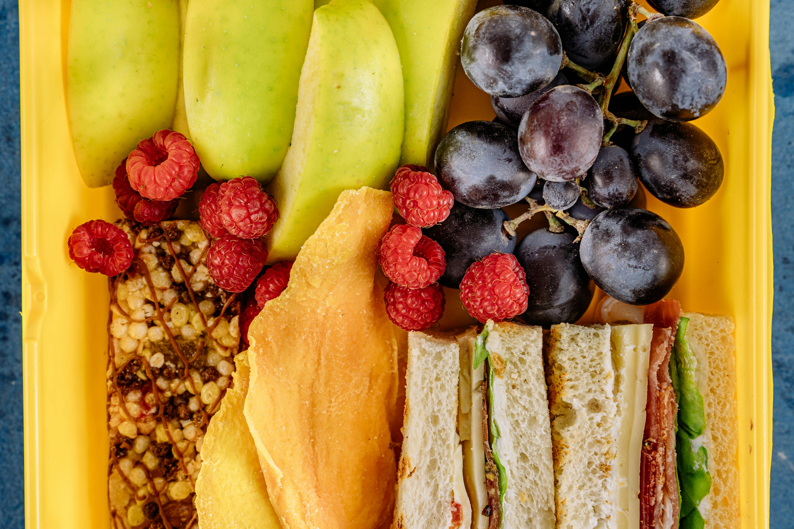
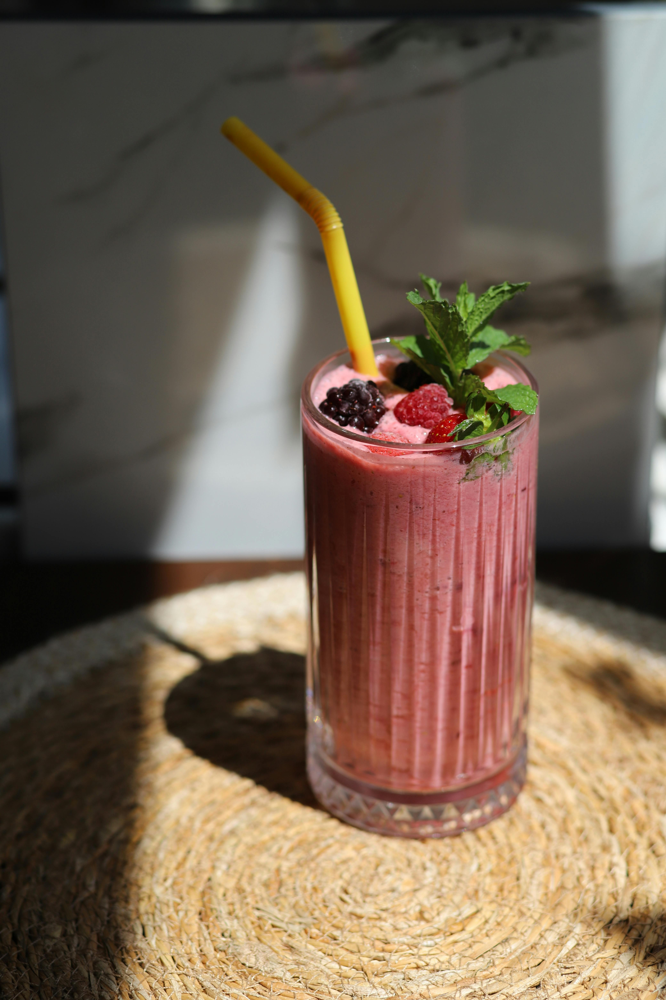
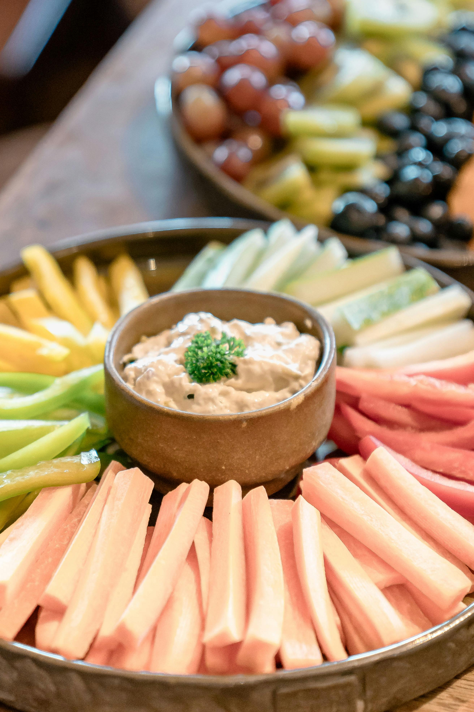

Build-your-own plates
Use simple foods like crackers, cheese, fruit, turkey, and veggies so kids can choose what to eat.
Simple strategies to make meals feel less stressful and more manageable.
Picky eating can be frustrating, especially when families are trying to balance nutrition, time, and what kids will actually eat. These tips focus on small, realistic changes that can help make mealtimes feel more positive.



Use simple foods like crackers, cheese, fruit, turkey, and veggies so kids can choose what to eat.

Blend fruit, yogurt, and milk for an easy option that can include protein and nutrients.

Try ranch, hummus, yogurt dip, peanut butter, or applesauce to make foods more approachable.